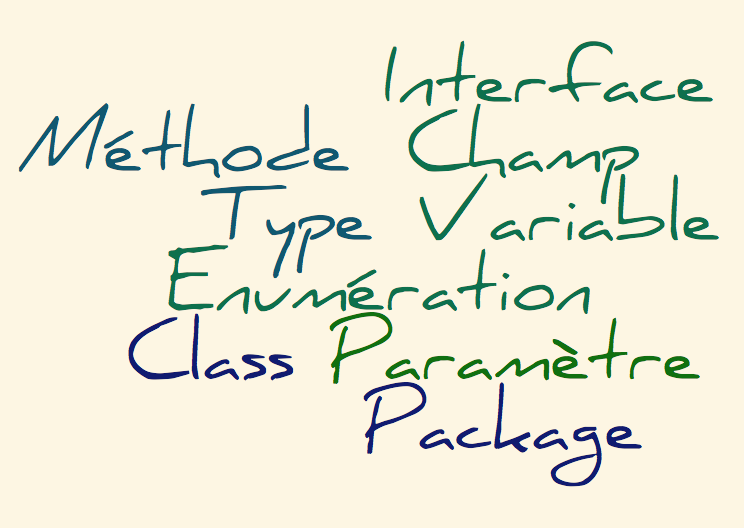
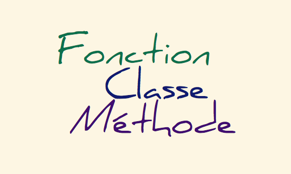

Annotation Java
vs.
Décorateur Python
8 Décembre 2016
Toulouse JUG
| Computer scientist | Freelance |
| λ |  |
Annotations Java
Ajout de méta-données dans le code source Java
Intégration dans la version 1.5 (JSR-175) + APT
A la compilation depuis la version 1.6 (JSR-269)
Annotations Java :: Elements cible
Annotations Java :: Rétention
|
SOURCE
Eliminée à la compilation
Traitement à la compilation (*)
(*) JSR-269
|
CLASS
Eliminée à l'exécution
Traitement du
code objet |
RUNTIME
Préservée à l'exécution
Traitement à l'exécution
|
Annotations Java :: En résumé
Séparation Spécification & Traitement
Traitement à la Compilation & Exécution
Callable Python :: Définition
|
Fonction
Application
|
Classe
Application
|
Méthode
Application
|
Instance
Méthode __call__
|
__call__ évoque le apply de Scala !
Décorateurs Python :: Callable
Decorateurs Python :: Définition
Callable qui prend pour argument un Callable
Decorateur :: Callable ⟶ Callable
Fonction d'ordre supérieur
Composition de Décorateurs et Monoïde Commutatif
Decorateurs Python :: Fonction
def tracer(f):
print("Trace active pour " + nom_de(f)) # ⟨1⟩
return f
⟨1⟩ à l'initialisation
Decorateurs Python :: Fonction
def tracer(f):
print("Trace active pour " + nom_de(f)) # ⟨1⟩
def manipule_f(*args, **kwargs): # Forme generale
print("Trace effective pour " + nom_de(f)) # ⟨2⟩
return f(*args, **kwargs)
return manipule_f
⟨1⟩ à l'initialisation et ⟨2⟩ à chaque exécution
Decorateurs Python :: A l'Action
def ma_fonction():
pass
ma_fonction = tracer(ma_fonction)
Un peu de sucre ?
@tracer
def ma_fonction():
pass
Decorateurs Python :: Classe Callable
class Tracer:
def __init__(self, f):
self.f = f
print("Trace active pour " + nom_de(self.f)) # ⟨1⟩
⟨1⟩ à l'initialisation
Decorateurs Python :: Classe Callable
class Tracer:
def __init__(self, f):
self.f = f
print("Trace active pour " + nom_de(self.f)) # ⟨1⟩
def __call__(f, *args, **kwargs):
print("Trace effective pour " + nom_de(self.f)) # ⟨2⟩
return self.f(*args, **kwargs)
⟨1⟩ à l'initialisation et ⟨2⟩ à chaque exécution
Decorateurs Python :: A l'Action
def ma_fonction():
pass
@Tracer
def ma_fonction():
pass
Décoration sans contexte i.e. paramètres
Decorateurs Python :: Avec Paramètres
class Tracer:
def __init__(self, nom):
self.nom = nom
print("Trace active pour " + nom)
Decorateurs Python :: Avec Paramètres
class Tracer:
def __init__(self, nom):
self.nom = nom
print("Trace active pour " + nom)
def __call__(self, f):
print("Trace active pour " + nom + "::" + nom_de(f))
return f
Decorateurs Python :: Avec Paramètres
class Tracer:
def __init__(self, nom):
self.nom = nom
print("Trace active pour " + nom)
def __call__(self, f):
print("Trace active pour " + nom + "::" + nom_de(f))
def manipule_f(*args, **kwargs):
print("Trace effective pour " + nom + "::" + nom_de(f))
return self.f(*args, **kwargs)
return manipule_f
Decorateurs Python :: A l'Action
def ma_fonction():
pass
ma_fonction = Tracer("Ma Fonction")(ma_fonction)
Et rebelote avec le sucre !
@Tracer("Ma Fonction")
def ma_fonction():
pass
Decorateurs Python :: Frameworks
...
Decorateurs Python :: Extension du langage
def Maybe:
def __init__(self, value=None):
self.value = value
@staticmethod
def none(): # pas de self ... car statique
return Maybe()
# ...
Decorateurs Python :: Extension du langage
def Maybe:
def __init__(self, value=None):
self.value = value
@staticmethod
def none(): # pas de self ... car statique
return Maybe()
# ...
Decorateurs Python :: Extension du langage
o.m ⇒ type(o).__dict__["m"].__get__(o, type(o))
class StaticMethod(object):
def __init__(self, f):
self.f = f
def __get__(self, obj, objtype=None):
return self.f # Appel glouton: mange l'objet associé à self
"Descriptor Protocol" pour aller plus loin ...
Décorateurs Ecmascript :: Séquelle
A Decorator is an expression that
evaluates to a function applied to
the target, name and decorator
descriptor.
Optionally it returns a decorator descriptor to install on the target object
Optionally it returns a decorator descriptor to install on the target object
Approches différentes
|
Java
Interface
Annotation Traitement |
Python
Callable
Décoration Exécution |